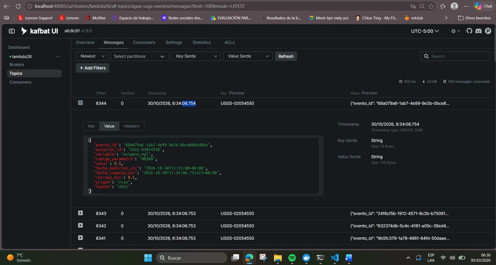
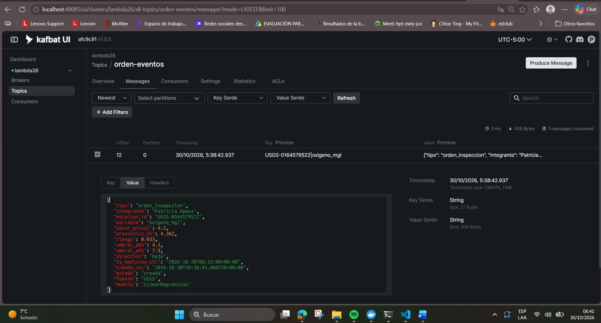
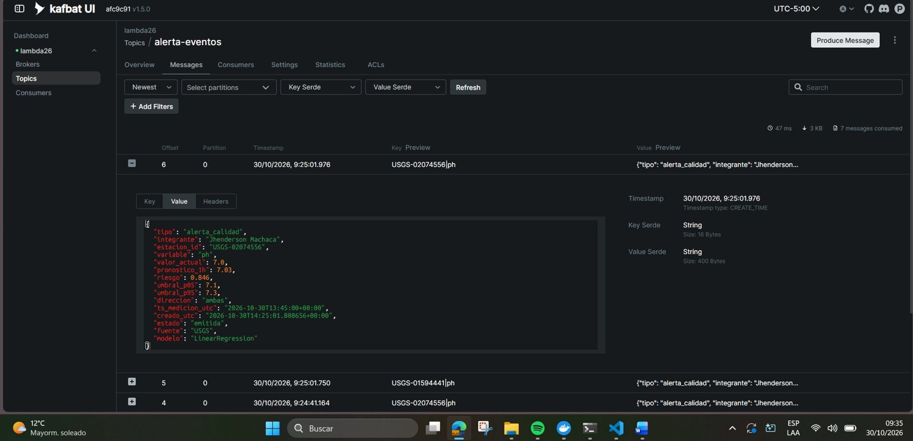
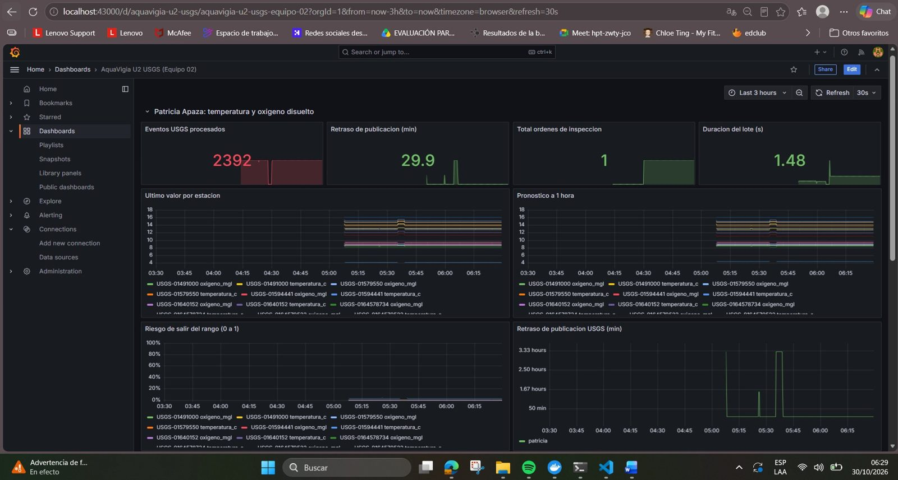
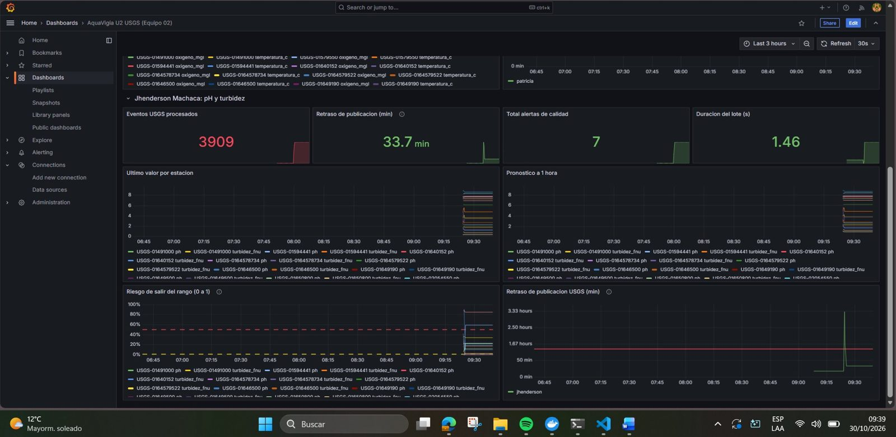

Pruebas y evidencias¶
Esta página reúne qué se probó, cómo y qué salió. Cada fila enlaza a la evidencia completa. Los números son los de las ejecuciones reales del equipo; no hay valores de ejemplo.
1. Sistema integrado (Unidad 3)¶
Detalle en Ejecución integrada.
| Prueba | Resultado | Evidencia |
|---|---|---|
| Ejecución integrada de Patricia (batch, streaming, modelo, eventos y métricas juntos) | 3 corridas completas, todas con 21 de 21 compuertas. La del episodio dio 971 pronósticos, 4 órdenes confirmadas en Kafka y riesgo máximo 0,745 | integracion.md, sección 4 y manifiestos |
| Ejecución integrada de Jhenderson | 2 corridas completas con 21 de 21 compuertas: 1 043 y 1 077 pronósticos, 15 y 16 alertas confirmadas en Kafka | Ídem |
| Caso de error: Parquet gold incompleto | La compuerta de completitud detuvo la corrida en la sección 2 (794 866 de 1 245 817 filas; faltaban 3 regiones). Las demás compuertas pasaban: solo la de completitud lo detectó. Se regeneró el gold y la corrida siguiente pasó | salida de la corrida fallida y bitácora, fila 1 |
| Comparación de dos corridas por manifiesto | Mismo procedimiento y compuertas; cambian las lecturas y por eso los pronósticos y eventos | integracion.md, sección 4 |
| Métricas confirmadas en Prometheus | En cada corrida, las 15 métricas publicadas se leyeron de vuelta con el mismo valor | Sección 5 de cada cuaderno 13 |
| Latencia de punta a punta (Kafka → pronóstico) | p50 entre 6,7 y 7,5 s; p95 entre 11,3 y 11,9 s; ningún evento sobre 1 minuto | Manifiestos |
| Error del modelo en vivo frente a repetir el último valor | Con más de 300 comparaciones por variable, el modelo tuvo menor RMSE en las cuatro variables. Con solo 69 (corrida 1 de Patricia), la persistencia ganó en temperatura y quedó como advertencia | Manifiestos e integracion.md |
2. Hardening y no regresión (Unidad 3)¶
Detalle en Hardening y revisión técnica.
| Prueba | Resultado | Evidencia |
|---|---|---|
| Comandos de salud probados a mano antes de usarlos | 8 de 8 terminaron con código 0 | healthchecks_prueba_manual.txt |
Arranque ordenado con levantar.ps1 |
Terminó sin error y los 8 servicios con comprobación de salud quedaron (healthy) |
docker_ps_despues.txt |
| Credenciales por variable de entorno | config muestra admin sin variable y el valor nuevo con GRAFANA_ADMIN_PASSWORD |
grafana_variable_prueba.txt |
| Puente con Kafka caído | 3 reintentos kafka_no_disponible, luego connected y healthy sin intervención |
puente_reintento_prueba.txt |
| No regresión antes y después del hardening | Mismas compuertas (21 de 21), mismos eventos confirmados, mismo riesgo máximo, error en vivo igual al tercer decimal | hardening.md, sección 5 |
Los archivos .txt están en docs/u3/evidencias/.
3. Batch (Unidad 1)¶
| Prueba | Resultado | Dónde |
|---|---|---|
| Esquema validado | Columnas obligatorias presentes | 04, sección 3 |
| Duplicados | 1 250 000 → 1 245 817 filas | 04, sección 3 |
| Escritura y lectura del Parquet sin pérdida | Verificado: 1,245,817 filas, ida y vuelta sin perdida. |
04, sección 3 |
| Poda de particiones | El plan físico muestra PartitionFilters: [isnotnull(region), (region = Puno)] |
04, sección 3 |
| Modelo de Patricia (alerta del mes siguiente) | AUC 0,509: no separa mejor que el azar. Se declaró que no debe usarse para priorizar | 04 de Patricia, sección 4 |
| Modelo de Jhenderson (pH del mes siguiente) | RMSE 0,0355 con R² 0,0008: el pH mensual es casi constante y el modelo no capta una tendencia | 04 de Jhenderson, sección 4 |
4. Tiempo real (Unidad 2)¶
Detalle en las páginas de la Unidad 2 de Patricia y Jhenderson.
| Prueba | Resultado |
|---|---|
| Watermark medido, no supuesto | 85 minutos: percentil 99 del retraso real de publicación por 1,2 |
| Checkpoint | Al reiniciar con el mismo checkpoint, el batchId continúa y no vuelve a 0 (Patricia: sigue en 4; Jhenderson: en 5) |
| Dato tardío | Una lectura con 500 minutos de atraso no entra con watermark y sí entra sin él |
| Deduplicación | Reenvío de 50 lecturas: +50 sin deduplicar, +0 con deduplicación (12d) |
| Modelo de series de tiempo frente a repetir el último valor (validación del 12b) | Mejora de RMSE: temperatura 45,1 %, oxígeno 32,1 %, pH 9,4 %, turbidez 4,2 % |
5. Métricas para la demostración¶
Cada cifra que se dice en la demostración se puede señalar en un manifiesto o en Prometheus (S14, 3.7). Valores de las últimas corridas: Patricia 20261113T163113Z y Jhenderson 20261113T163824Z, las dos con el episodio del 16 al 17 de octubre.
| Métrica | Patricia | Jhenderson | Origen: campo del manifiesto · métrica en Prometheus |
|---|---|---|---|
| Filas del Parquet gold de la U1 | 1 245 817 | 1 245 817 | batch.filas · aquavigia_int_batch_filas |
| Indicador de la U1 | 22,56 % fuera de rango (281 071) | 86,54 % pH aceptable; 11,76 % ácido; 1,70 % fuera de rango | batch.indicadorU1 |
| Mediana (p50) y p95 del batch | temperatura 16,0 y 25,0 °C; oxígeno 7,0 y 9,63 mg/L | pH 7,20 y 8,19; turbidez 4,15 y 17,97 NTU | batch.kpi |
| Compuertas que pasaron | 21 de 21 | 21 de 21 | compuertasPrevias, batch.calidad, streaming.compuertas, kpiTiempo.compuertas · aquavigia_int_compuertas_ok |
| Pronósticos en 240 s de streaming | 1 015 | 1 077 | streaming.pronosticos · aquavigia_int_stream_pronosticos |
| Eventos de negocio emitidos (confirmados en Kafka) | 4 órdenes (4) | 16 alertas (16) | streaming.eventosNegocio y eventosNegocioEnKafka · aquavigia_int_eventos_negocio |
| Riesgo máximo | 0,745 | 1,000 | streaming.riesgoMax · aquavigia_int_riesgo_max |
| Latencia de punta a punta p50 / p95 / máx. | 6,7 / 11,3 / 12,1 s | 7,0 / 11,4 / 12,3 s | kpiTiempo.latenciaPuntaAPunta · aquavigia_int_latencia_p50_s, _p95_s |
| Eventos con más de 1 minuto de latencia | 0 % | 0 % | kpiTiempo.latenciaPuntaAPunta.fraccionMayor1Min |
| Duración del micro-lote p50 / p95 | 2 034 / 2 652 ms | 2 142 / 2 835 ms | kpiTiempo.duracionMicrolote · aquavigia_int_lote_p50_ms, _p95_ms |
| RMSE en vivo, modelo frente a repetir el último valor | temperatura 0,1131 frente a 0,1926; oxígeno 0,1260 frente a 0,1957 | pH 0,0570 frente a 0,0697; turbidez 6,1172 frente a 7,6671 | streaming.error · aquavigia_int_rmse_vivo |
| RMSE de validación del 12b (referencia) | temperatura 0,1299; oxígeno 0,1422 | pH 0,0683; turbidez 8,2011 | meta.json del 12b, y streaming.error |
| Duración de la ejecución integrada | 263,0 s | 263,8 s | duracionTotalS |
| Métricas devueltas por Prometheus con el valor recién publicado | 15 de 15 | 15 de 15 | observabilidad.todasEnPrometheus |
Los valores de streaming cambian entre corridas porque cada una lee lecturas distintas; lo que no debe cambiar es que pasen las compuertas (no regresión).
6. Capturas¶
| Captura | Muestra |
|---|---|
 |
Mensaje real de sensor en Kafka UI |
 |
Orden de inspección en orden-eventos |
 |
Alerta de calidad en alerta-eventos |
 |
Tablero con la fila de Patricia |
 |
Tablero con la fila de Jhenderson |
Las capturas son de la Unidad 2.